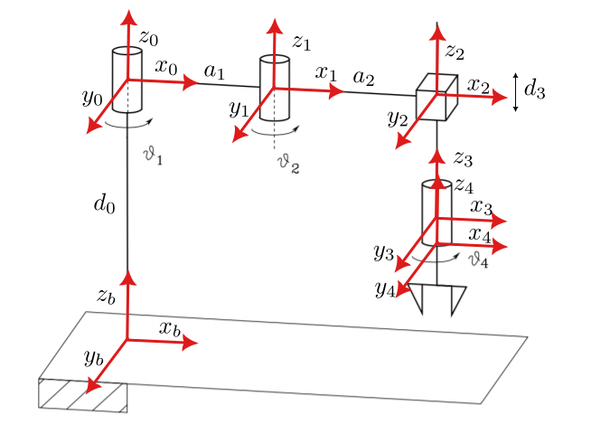

Overview
This project will cover the following topics:
1. Deriving Forward kinematics using DH Parmamertization of a robotic Arm
2. Forward Differential Kinematics
3. Inverse Differential Kinematics (using Jacobian Inverse and Jacobian Transpose)
4. Exploiting redundant DOFs to add a secondary objective
Consider the SCARA manipulator depicted below.

Our Goal is to have the SCARA manipulator end effector follow the given position and velocity trajectories.
The manipulator parameteres are \[ d_0 = 1 \: m\] \[a_1 = a_2 = 0.5 \: m\] \[ \theta_{1_{min}} = - \pi / 2 \: rad, \theta_{1_{max}} = \pi / 2 \: rad \] \[ \theta_{2_{min}} = - \pi / 2 \: rad, \theta_{2_{max}} = \pi / 4 \: rad \] \[ d_{3_{min}} = 0.25\: m , d_{3_{max}} = 1\: m \] \[ \theta_{4_{min}} = - 2\pi \: rad, \theta_{4_{max}} = 2\pi \: rad \]
The frames are depicted into the figure and the DH parameters are:
| \(d_i\) | \(\alpha_i\) | \(\theta_i\) | \(a_i\) | |
|---|---|---|---|---|
| Link 1 | \(0\) | \(0\) | \(\theta_1\) | \(a_1\) |
| Link 2 | \(0\) | \(0\) | \(\theta_2\) | \(a_2\) |
| Link 3 | \(d_3\) | \(0\) | \(0\) | \(0\) |
| Link 4 | \(0\) | \(0\) | \(\theta_4\) | \(0\) |
where \(d_i\) and \(\alpha\) are the translational and rotational offsets along the \(x\) axis of frame \(i-1\) and frame \(i\). \(\theta_i\) and \(a_i\) are the joint angles and link lengths respectively.
Note that the 0 frame is not coincident with the b frame. There is a translation from the ground plane denoted with \(d_0 = 1\). The frame 4 is coincident with the frame 3 at the starting. Be careful on the \(d3\) component. The range of values is always positive. When the arm is fully extended (down towards the floor) the value is 1m whereas 0.25 when retracted (away from the floor). However, when you build your matrix note that \(d_3\) moves along \(−z_2\) axis and for this reason you translation in \(A_{23}\) should be negative as \(−d_3\).
Part 1
We implement the algorithms for kinematic inversion with inverse and jacobian transpose along the given trajectory. Adopting the Euler integration rule with integration time 1 ms. Implement a final function visualize results for each part (joint value and error).
The inverse kinematics equation for the given manipulator is given by \[ \dot{q} = J^{-1}_a(q)(\dot{x}_d + Ke)\] Where ‘ is the inverse of the Jacobian. is the velocity trajectory. ’ is the error between the given trajectory and the end effector position and is the gain of the system. For the SCARA robot the Jacobian is a 4×4 matrix ( Linear velocities along x, y and z and one orientation). Since there is only one orientation component the Geometric Jacobian is equal to the Analytical Jacobian. The equation given above is modeled using the following kinematic control schematic diagram.
Simulink Block Diagram
Here the ‘From Workspace’ block is used to import time series trajectory data from the workspace. A subtract block is used to calculate the error between the required trajectory and the actual position of the end effector which is calculated using direct kinematics. The error signal is passed through a gain block. The gain is set to 1000.
Further, an addition block and product block is used to complete the right hand side of the equation. A discrete integrator block is used to obtain from . is the input to two functions.
Derive the Direct Kinematics
The direct kinematics of the system can be represented by the equation \[ \mathbf{x = K(q)}\] where \[\mathbf{q} = \begin{bmatrix} \theta_1 \\ \theta_2 \\ d_3 \\ \theta_4 \end{bmatrix} \] and \(\mathbf{K(q)}\) is a tranformation that maps the joint space \(\mathbf{q}\) to the operation space \(\mathbf{x}\). We can find \(\mathbf{K(q)}\) by composing all the transformations from the base frame to the end effector frame.
The tranformation \(A_b^0\) is a pure translation along \(z_b\) \[ A_b^0 = \begin{bmatrix} 1 & 0 & 0 & 0\\ 0 & 1 & 0 & 0\\ 0 & 0 & 1 & d_0\\ 0 & 0 & 0 & 1 \end{bmatrix}, A_0^1 = \begin{bmatrix} \cos(\theta_1) & -\sin(\theta_1) & 0 & a_1 \cos(\theta_1)\\ \sin(\theta_1) & \cos(\theta_1) & 0 & a_1\sin(\theta_1)\\ 0 & 0 & 1 & 0\\ 0 & 0 & 0 & 1 \end{bmatrix} \]
\[ A_1^2 = \begin{bmatrix} \cos(\theta_2) & -\sin(\theta_2) & 0 & a_2 \cos(\theta_2)\\ \sin(\theta_2) & \cos(\theta_2) & 0 & a_2\sin(\theta_2)\\ 0 & 0 & 1 & d_0\\ 0 & 0 & 0 & 1 \end{bmatrix} , A_2^3 = \begin{bmatrix} 1 & 0 & 0 & 0\\ 0 & 1 & 0 & 0\\ 0 & 0 & 1 & -d_3\\ 0 & 0 & 0 & 1 \end{bmatrix} \]
\[ A_3^4 = \begin{bmatrix} \cos(\theta_4) & -\sin(\theta_4) & 0 & 0\\ \sin(\theta_4) & \cos(\theta_4) & 0 & 0\\ 0 & 0 & 1 & 0\\ 0 & 0 & 0 & 1 \end{bmatrix} \] \[T_3^b = A_b^0 \cdot A_0^1 \cdot A_1^2 \cdot A_2^3 \cdot A_3^4\]
Hence the pose of the end effector \(\mathbf{K(q)}\) is given by \[\mathbf{K(q)} = \begin{bmatrix} T_3^b(0,3) \\ T_3^b(1,3) \\ T_3^b(2,3) \\ \theta_1 + \theta_2 + \theta_4 \end{bmatrix} \]
Find the Jacobian of the Manipulator
The Jacobian which is then used to find the Inverse Jacobian of the system. Using the frames given we calculate the geometric Jacobian using the Equation.
where \[ p_0 = [0,0,0]^T \] \[ p_1 = A_0^1(0:2,4)\] \[ p_2= A_0^2(0:2,4) ,where \: A_0^2 = A_1^2 \cdot A_0^1\] \[ p_3= A_0^3(0:2,4) ,where \: A_0^3 = A_2^3 \cdot A_0^2\] \[ p= T_3^b(0:2,4) \]
and \(Z_i\) are the \(Z\) components of each of the frame \(i\) with respect to the base frame.
We find the Jacobian \(J(q)\) to beInverting it we get \(J^{-1}(q)\)
Results Using Jacobian Inverse
The error vs time chart for the end effector positions along X, Y, Z and theta are given.
Using Jacobian Transpose
The inverse kinematics equation for the manipulator using Jacobian Transpose \(J_a(q)^{T}\) is given by \[ \dot{q} = J_a(q)^{T}Ke\]
The tranpose of the jacobian is
This method of determining joint velocities is more computationally efficient that using the inverse. However, it has lower accuracy. Hence it is used for cases with larger error tolerance.
The equation given above is modeled using the following kinematic control schematic diagram.
Simulink Block Diagram
The discrete integrator block is used to integrate to for every millisecond sample time. The Simout blocks are used to send the and X values to the workspace. The direct kinematics block remains the same as before.
Results Using Jacobian Transpose
From the results it is evident that the tracking error of the Jacobian Transpose control is 3 to 4 orders of magnitude higher than the Jacobian Inverse based Control but the runtime of the code is significantly shorter.
Part 2
Suppose we relax one component in the operational space, we can maximize the distance from the mechanical joint limits hence avoiding unstable regions and singularities.
Here I implement an algorithm for kinematic inversion with Jacobian pseudo-inverse along the given trajectory maximizing in two separate cases the distance from the mechanical joint limits ( by relaxing the orientation component ϕ).
\[ \dot{q} = J^+_a(\dot{x}_d+Ke) + (I - J_a^+J_a)\dot{q}_a\]
Where \(J^+_a\) is the Jacobian PseudoInverse.
\(K\) is a positive definite matrix and convergence depends on the eigen values finally the \(q_a\) enables us to generate internal motions and optimize for certain criteria without changing end effector position. In our case we want to stay as close as possible to the center of the joint range.
\[ \dot{q_a} = k_0 \left( \frac{\partial w(q)}{\partial q} \right)\]
where \(k_0 > 0\) and \(q_a\) is a (secondary) objective function of the joint variables.
\[ w(q) = \frac{1}{2n} \sum_{i=1}^n \left( \frac{ q_i - \bar{q_i}}{q_{iM}-q_{im}} \right)\]
Here \(w(q)\) is a cost function that when minimized ensures that the joint positions are close to the center of its range.\(q_{iM}\) and \(q_{im}\) denotes the maximum and minimum joint limits respectively and \(\bar{q_i}\) is the middle value of the joint range; thus, by maximizing this distance, redundancy is exploited to keep the joint variables as close as possible to the centre of their ranges.
Simulink Block Diagram
The Simulink Network above is very similar to the previous block diagrams. However it has a few key differences.
Firstly, the orientation term has been relaxed. Hence \(\theta_d\) and \(\dot{\theta_d}\) are not input into the system.The direct kinematics block is the same as that implemented in previous questions. However, I have used a second block to relax the orientation component. In essence, converting a 4X1 matrix to a 3X1 matrix.
Secondly I have implemented two subsystems. Subsystem one takes input \(q\) and returns the Jacobian \(J\) and the jacobian pseudo inverse \(J^+_a\).Sub system 2 takes \(q\), the Jacobian and the Jacobian pseudo inverse as input and returns the term \((I - J_a^+J_a)\dot{q}_a\) .
Part 2 Results
The error vs time chart for the end effector positions along X,Y and Z axes are given.